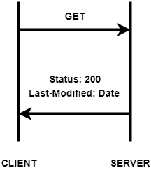
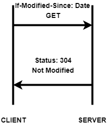
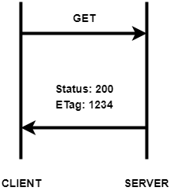
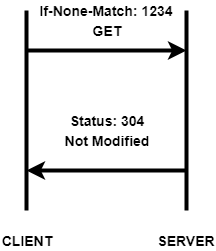

REST
The best practises
Krzysztof Chruściel
Diebold-Nixdorf
RESTafarians
roy fielding

STATELESS
UNIFORM
client-server
cacheable
All about resources
Nouns
/api/todos # all todos
/api/todos/10 # todo with 10 ID
/api/todos/titles # all todos titles
/api/users/1/todos # todos assigned to user with 1 ID
/api/users/1/todos/10 # todo with 10 ID assigned to user with 1 ID
Methods
| METHOD | URI | RESULT |
|---|---|---|
| GET | /api/todos | Take resources |
| POST | /api/todos | Create |
| PUT | /api/todos/10 | Create or update |
| PATCH | /api/todos/10 | Partial update |
| DELETE | /api/todos/10 | Delete todo |
More methods
HEAD
CONNECT
OPTIONS
TRACE
Methods
safe vs unsafe
idempotent
HTTP Codes
2xx - Success
3xx - Redirection
4xx - Client errors
5xx - Server errors
Success
200 - OK
201 - Created
202 - Accepted
204 - No Content
Client errors
401 - Unauthorized
403 - Forbidden
405 - Method Not Allowed
406 - Not Acceptable
415 - Unsupported Media Type
404 - Not found
Versioning
By URI
By URI parametr
By HTTP header
406/415
By URI
/api/v2/todos
+ easy to use
+ easy to test
- not a part of resource
- multiple URLs for the same resource
- the most recent version of API
By URI parametr
/api/todos?ver=2
+ easy to use
+ easy to test
+ simple way to default version
- version parameter might interfere with resource attributes
By HTTP header
Accept: application/vnd.codecouple.pl.todo.v2+json
+ RESTful
+ you don’t mix the control params like version
- hard to test
Cache
Cache-Control
 ETag
 Documentation
Swagger
Spring REST docs
HATEOAS
RAML
API Blueprint
Swagger - UI

Swagger - ANNOTATION HELL
@ApiOperation(value = "Find pet by Status",
notes = "${SomeController.findPetsByStatus.notes}"...)
@RequestMapping(value = "/findByStatus", method = RequestMethod.GET, params = {"status"})
public Pet findPetsByStatus(
@ApiParam(value = "${SomeController.findPetsByStatus.status}",
required = true,...)
@RequestParam("status",
defaultValue="${SomeController.findPetsByStatus.status.default}") String status) {
//...
}
@ApiOperation(notes = "Operation 2", value = "${SomeController.operation2.value}"...)
@ApiImplicitParams(
@ApiImplicitParam(name="header1", value="${SomeController.operation2.header1}", ...)
)
@RequestMapping(value = "operation2", method = RequestMethod.POST)
public ResponseEntity operation2() {
return ResponseEntity.ok("");
}
REST docs - TDDocumentation
HATEOAS

DEMO
MORE
Paging and sorting
i18n - Accept-Language
Limiting the number of requests
Metrics
Distributed tracing
More...
Nice to see/read
Architectural Styles and the Design of Network-based Software Architectures
2013 - Tomek Cejner - Moda na REST - o tworzeniu pięknych API
WJUG #157 - Dlaczego 99% firm, które tworzą API RESTowe kłamie? - Bartek Andrzejczak
Thanks
Krzysztof Chruściel
krzysztof.chrusciel@outlook.com
codecouple.pl
github.com/kchrusciel/dn-rest